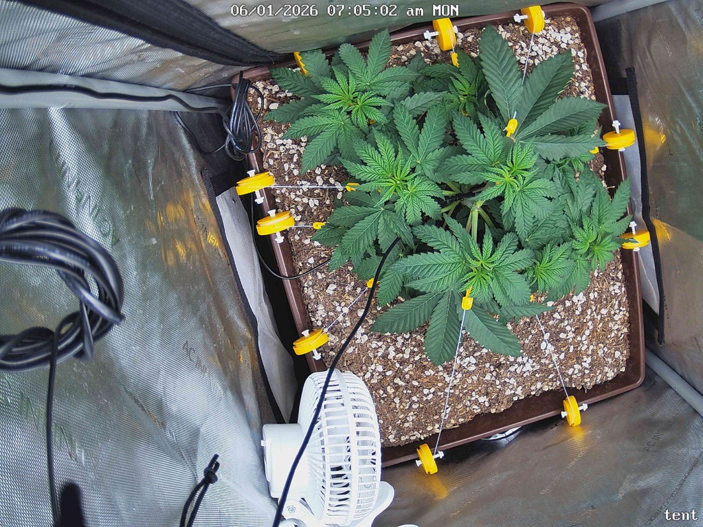

← All reports
Jun 1, 2026
Mon Jun 1, 2026 — 7:05 AM

Prognosis
Daily prognosis — 2026-06-01
- Canopy spread: LST is paying off — canopy is wider and flatter than 05-31, with side branches reaching further into the previously empty quadrants. Good even light exposure across more nodes.
- New growth: visibly more leaflet expansion at interior nodes; center is filling in nicely post-topping (day 9 since topping on 5-23).
- Color & posture: uniform deep green, leaves flat and horizontal, no praying/tacoing, no cupping, no clawing. Petioles look perky — no droop.
- Stress signs: none. No tip burn, no interveinal yellowing, no bleaching despite 500 PPFD. No visible pests, webbing, or spotting. Soil surface looks evenly moist-to-dry (day 4 since 5-28 water — within your 4–5 day cadence).
- Training: tie-down anchors look well-placed; no snapped stems, no stress kinks visible at the bends.
- Phase check: ~5 weeks from germ, ~4 weeks in tent, topped + 2 rounds of LST. Plant is comfortably on schedule for veg — arguably ahead given how cleanly it took the topping and how fast the canopy is opening up.
- Watering: soil surface starting to lighten; you're approaching the next watering window (likely tomorrow or day after based on your 4–5 day cadence).
- Next actions: no action needed today. Watch soil weight — water when pot feels light, probably 6-02 or 6-03. Continue tucking/tying new growth that pops above the canopy plane.
Overall: Textbook recovery and response to training — healthy, vigorous, and right on track.